1925—Millinery
by Jane Loewen
CHAPTER XI—TAILORED TRIMMINGS
Tailored trimmings may be divided into two classes according to the kinds of hats they trim.
I. SEVERE, FACTORY-TAILORED HATS
Severe, factory-tailored hats are hats made ready to wear and are invariably trimmed with a band and bow of grosgrain ribbon like a man's hat. A Knox sailor is a good example of this type of hat.
II. SEMITAILORED HATS
These hold more interest for the milliner and millinery student because they are largely made by hand.
GENERAL STREET WEAR
Many of the hats for general and street wear come under this heading. Tailored and semitailored hats of velvet fabric, straw, and braid-straw cloth come in this class.
With the present-day styles, the better hats of this type are soft. Stiff hats do not accord with the fashions favored in the mode of hairdressing or in frocks and coats.
SPORT WEAR
Hats for sport wear may be, and usually are, made very simply, depending on design, line, and color for their style, but to be comfortable they must be soft and lightweight.
Fabrics, such as taffeta and duvetyn, ribbons, soft braid, and felts are suitable materials for use in making sport hats.
III. KINDS OF TAILORED TRIMMINGS
RIBBON
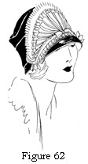Figure 62. Hat with Ribbon Ornament Sewn on a Shaped Foundation Which Is Used to Trim a Small Mushroom Hat.
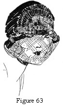Figure 63. Showing the Same Sort of Ornament as in Figure 62 with Different Pleatings and a Different Hat.
Ribbons have been used for decorative purposes since the days of Queen Elizabeth. At that time they were worn by both men and women of high rank. Ribbons were used for garters and shoe roses by the elegant women and men of high degree. Ladies used ribbons for their exaggerated styles of headgear and to adorn their dresses with bows, rosettes, and lover's knots.
For tailored trimmings there is no other one article which holds so unique a place. It may form the simplest trimming, or be used for the most elaborate of the tailored designs. It very rightly comes first in the list of tailored trimmings.
1. Band and bow. Many tailored and sport hats have merely a band and bow of ribbon as trimming. Many embroidered hats have a band and bow of narrow ribbon as a finish.
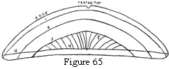Figure 65. Buckram Foundation for the Ornament with Lines 1, 2, and 3 for the Ribbon Pleatings and Lines 4 and 5 for the Center Loops.
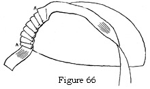Figure 66. The Pleatings of Ribbon Which Outline the Edge, Line A.
2. Flat ornaments of pleating and loops. This type of ornament is made on a foundation of elastic net, crinoline, or buckram.
In most cases the foundation is wired and covered with silk or fabric to match the ribbon.
Half-moons, triangles, ovals, and semicircles make good foundation shapes. The edge of the foundation may be outlined with loops of one inch or less and filled into the center with flat pleatings. To turn back one corner of the pleats makes variety in the combination of straight lines and crosslines. In this sort of ornament the center is finished with a flat bow of two or more loops and two or more ends. A flat cluster of loops and ends is often used to add length or width to an ornament (see illustration 64).
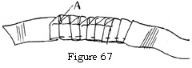Figure 67. For the Second Row of Ribbon the Pleating Is Sewn and the Corners Turned before Fastening It in the Ornament.
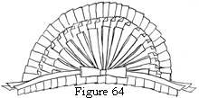Figure 64. Ornament Used on Figure 62.
3. Tied and pleated ornaments. Tied and pleated ornaments are always circular in shape, never square nor elongated. This is because they are formed of loops tied on a central thread as an axis (see illustration). Each loop is really the radius of a circle.
The number of loops used for these ornaments varies with the size of the finished ornament and the width of the ribbon.
For No. 6 ribbon, 18 to 20 loops 2½ inches long are used.
For No. 9 ribbon, 14 to 16 loops 2½ inches long are used, or 18 loops 3 inches wide.
Explicit directions are always given with each different ornament featured on any pattern (such, for instance, as Figure 74).
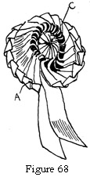Figure 68. Tied and Pleated Ornament.
 Figure 69. Tied and Pleated Ornament Turned at a Different Angle.
Figure 69. Tied and Pleated Ornament Turned at a Different Angle.

4. Pleating. Pleating has many different uses on the tailored hat.
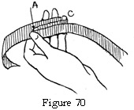Figure 70. Folding of Loops with Thumb and Small Finger as a Measure.
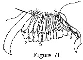Figure 71. Threading the Loops on Heavy Thread. This thread is pulled up and tied in a hard knot to form center C.
Ribbon is often sewed into bands or strips of plain, knife-pleating and used as finishes for brim edges and crowns (see Figure 73).
Very narrow ribbons, No. 1½ or No. 2, are used in pleated bands to outline sectional-crown seams or brim sections.
Fine ribbon pleatings are used as pipings with which to join straw braid as it is sewed to brim and crown.
No. 6, No. 5, and No. 3 ribbons are pleated flat, sewn down the center, and the loops tied (see illustration) to make pleating to be used in designs. These pleatings may outline appliqué flowers or beaded motifs, or may form an individual design which is filled in with beads or tinsel-thread stitching (see Figure 75).
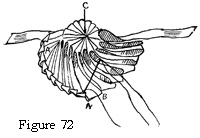Figure 72. Turning Back the Corners of the Ribbon Loops.
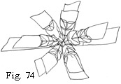Figure 74. Ribbon Ornament Used for Hat in Figure 73.
Wider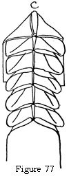 ribbons 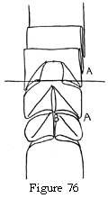are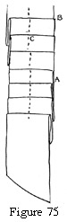 box-pleated in double or triple pleats and tied. Such pleatings are used for designs in the facings of rolled brims.
Figure 75. Pleating Sewed down the Center with Small Stitches.
Figure 76. Tying the Pleats with a Silk Thread Tie-Tack Stitch.
Figure 77. Showing the Finished Banding.
Taffeta may be cut in straight strips to resemble ribbon and fringed on both longitudinal edges. When pleated, this fringing makes lovely edges on large hats, or entire brims for small hats.
Shot silk, that is, changeable silk, is effective when treated in this manner.
Several different shades may be used, as a row of French blue, one of beige, and one of almond-green taffeta on a brown satin hat. The pleating should be sewn close together to give a soft, thick effect.
Figure 73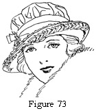. Completed Hat with Ribbon Pleating Used for Brim Edge, Crown Band, and Ornament at Right Side.
BRAIDING
1. Soutache. Soutache is always an effective braid to use for both conventional and floral designs.
It is often used in a loop or a wigwag, all-over design to cover entire brims and crowns.
Sewed in loops on a brim edge it makes a soft and flattering finish like an uncut fringe.
This idea is stressed by several of the French designers who use loop bands of soutache to outline tricorns and make cockades.
2. Ribbonzene. Ribbonzene is used for fringe, for fancy braid weaving, and for many embroidery designs. It is wonderfully effective when used to couch chenille or heavy yarn and for an all-over, honeycomb design (see Figure 93).
3. Tubing. Tubing is used in much the same way as soutache.
Straw tubing comes in visca and hair. Both of these tubings are used on maline hats, on hair hats, and on taffeta, satin, and straw-cloth hats. They may be used in design or in an all-over wigwag or loop pattern for entire hats.
Silk tubing is used on straw-cloth, on fabric, and on hair-braid hats. It is used, too, for fancy woven or loop edges on mushroom or rolled brims.
CORDING
Cording is much used for finishes. It is always used easily because it can be made of the same fabric as the hat and so be in perfect harmony.
Cording is always made by covering a cord with a bias strip of fabric.
1. Small, silk-finished cords. These cords have the two bias edges of the covering turned inside and the' two fold edges thus formed slip-stitched together.
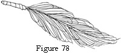Ornaments. Circles, irregular triangles, crescents, and shaped forms are covered solidly with finished cords covered in satin or silk to match the hat. These ornaments make good-looking finishes for feathers and hats that have corded edges.
Figure 78. Feather Stem Finished with Cord.
Edges and flanges. Brim edges and flanges are often outlined with finished cords in a self or contrasting color.
When cords are used the edges of the hat or flange are basted, and the cords sewn over them as a finish.
Finishes. Finished cords may be used to wrap the stems. of feathers, such as ostrich, aigrettes, or quills.
A circle of finished cording is often used to finish a rosette center, a shirred top crown, or a wing.
Many designers and trimmers go by the rule— "When in doubt use finished cording."
Finished cords make neat finishes for pleated ruffles, shaped flanges (as scalloped flanges), flower edges, and maline folds.
In fact, a well-made cord adds to the finished effect of a hat in almost any capacity in which it is used.
2. Large, silk-finished cords. These are usually made on a filled-wool cord which is very light in weight and may not be covered with a mull casing.
These large, finished cords are often made by measuring the bias width of material needed, stitching the casing the correct size, and drawing the cord through the casing (see illustration).
Fancy edges may be made by interlacing cords in loose scallops for large, mushroom brims. Small brims are effective when these large cords are twisted or braided to make the edge.
Ornaments. Two or more shades of cord may be sewn on a circular or shaped foundation to make trimming for sport and tailored hats.
Brims. Entire brims are made by sewing large, curved cords together. These are shaped over pressed frames just as in braid sewing (see Chapter VIII). A cord ¾ or ½ inch in diameter is shaped in circular rows which are slip-stitched together.
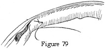3. Unfinished cords. Unfinished cords are used in at least half of all the hats made.
Figure 79. Unfinished Cord Used to Join Seams. Shown from the Wrong Side.
Seams. Seams for section crowns, tam crowns, cap crowns, in fact, most crowns, are effective when joined together with a cord. (See Chapter IV, section II.)
Edge finishes. In place of a wire edge finish, an unfinished cord may outline the brim edge and the facing be slip-stitched to it.
Where a bias or fitted brim is extended beyond the frame to make a soft edge, the two facings are usually joined together with a cord finish.
Always be careful to take the seam up close to the cord. If a space is left between cord and seam it makes an unsightly finish.
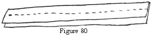(1) Cut a bias strip of material. Stitch a casing the size of the cord to be used. Stitch this separately in the hand or by machine—not on the cord (Figure 80).
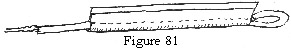(2) Fasten one end of the cord to a hairpin, or bodkin, and run it through the casing (Figure 80). Fasten the end of the cord to the end of the casing (see Figure 81).
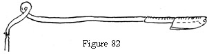(3) Pull the cord through to turn the casing right side out (see Figure 82).
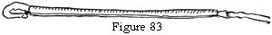(4) Run the cord through the finished casing (see Figure 83).
ORNAMENTS
Ornaments make an effective finish and decoration for many tailored and semitailored hats.
1. Pins. Pins may be of rhinestone, crystal, enamel, pearl, jet, or composition.
A pin should be so placed as to stress the line and design of the hat.
A pin (fancy) is to a hat what a period is to a sentence.
2. Buckles. Buckles are used when colonial designs are popular. They finish drapes or ribbon bows. Most buckles are made of silver, cut steel, jet, rhinestone, or a celluloid composition. There are many variations of shape and design.
3. Medallions. Medallions are usually of foreign make with clever workmanship and design in metal, mother of pearl, and various compositions. They are used as finishes in much the same way as fancy pins.
4. Braid ornaments. Braid ornaments are much used on cheaper hats.
Silk. Silk ornaments are of fancy, colored braids, of bias-silk folds, and of silk cords.
Tinsel. Tinsel ornaments are much in favor some seasons and out of style other seasons. Gold and silver braid are sewed in various designs or wound on different kinds of molds. At present these are mostly used on cheap hats.
Straw. Straw of fancy weaves and textures is much used for ornaments on straw hats of the factory type.
Composition. Ornaments of fancy shapes and designs such as women's heads, King Tut designs, and floral motifs, are used as finishes for small, draped hats.
FEATHERS
Feathers play a large part in trimming the tailored hat. It always pays to buy a good feather and to use it many times, rather than to buy a cheap feather. A cheap feather makes a poor appearance to begin with and, of course, looks worse every time it is worn.
1. Wings. The use of wings varies with the styles in vogue. There is no other trimming which has the clipped smartness of wings. Most of them are made of chicken or sparrow feathers glued or sewed on a wired foundation.
2. Goura. Goura is a dainty, graceful feather very effective when used in quantity, but very expensive. The cause of its high cost is easily understood when you see the tiny spray which grows on the topknot of the goura bird. It is naturally gray and white, but as a rule, the feathers are dyed to match the hat.
3. Numidy. Numidy feathers have a straight stem and a very long, drooping fiber. Usually they are used in clusters and in a standing trim like aigrettes. They are an African importation.
4. Coq. Coq in black, in iridescent shades, and in colors, is used to trim many smart hats. Spanish coq feathers are iridescent, long, and curved. They are the tail feathers of the Spanish rooster.
Usually they are used to trim fall and winter hats. They are a little heavy-looking for summer wear.
5. Hackle. Hackle feathers are finer than the feathers used for wings. They are the soft and shiny feathers that grow on the neck of a fowl.
Dyed and mounted, one would never guess their humble origin.
Paradise sprays often have dyed hackle at their base to hide the stems.
Entire turbans, many fancies, and many bands are made of dyed hackle.
6. Vulture. Vulture has only recently come into use. It makes beautiful fancies, bands, and ornaments. The fiber is shorter than ostrich; the stems are long and pliable. Vulture fancies are as handsome as aigrettes, much less cruel in origin, and more durable and less expensive.
7. Burnt and glycerined feathers. Much of the fine feather work done today has been made possible by the glycerine processes, which burn the fuzz or fiber off the common fowl feathers. This leaves the fine, aigrette-like centers of the feather.
Burnt goose. Many handsome bands and fancy ornaments are made of goose feathers which have been subjected to a glycerine process.
These feathers are usually mounted on a crinoline foundation, as they are short.
Glycerined ostrich. When ostrich has been glycerined, the feathers are much finer and thinner looking, and are used in quantity.
Entire facings are made of narrow, glycerined ostrich sewed in rows. For this, secondary ostrich stock is used.
Glycerined peacock. Glycerined peacock has much the appearance of Numidy. Many very handsome feathers are made of peacock which has been glycerined and dyed.
The old superstition of the bad luck attendant on peacock feathers is likely to pass away. Many people are wearing them without knowing it.
QUESTIONS
- What are the essential qualities of a sport hat?
- Make three different ornaments of pleating and loops, using ribbon or strips of paper.
- Give four uses of pleatings.
- How is soutache used on tailored hats; ribbonzene; tubing?
- How is finished cording made on fine cords; on large cords?
- Give three uses of small finished cords.
- Give three uses of large finished cords.
- What is the important point to remember in cording seams?
- Are cheap feathers a good investment?
- What are hackle feathers; glycerined feathers; goura feathers; what feathers are generally used for wing construction?